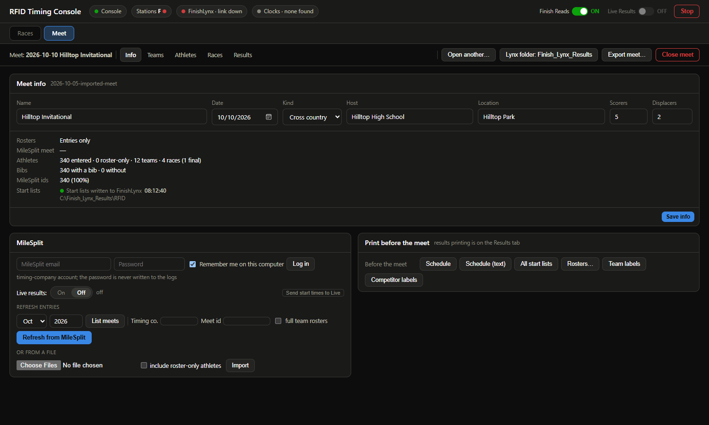
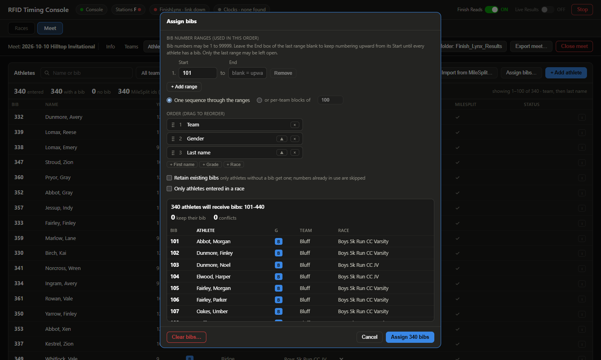
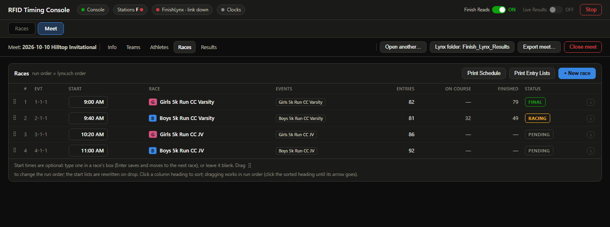
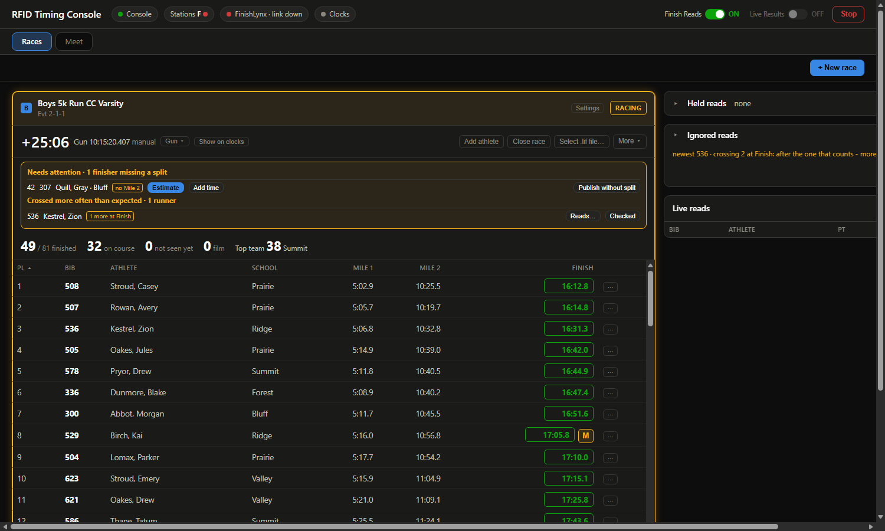
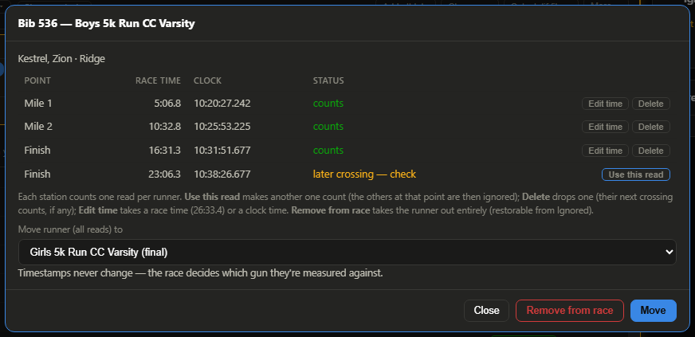
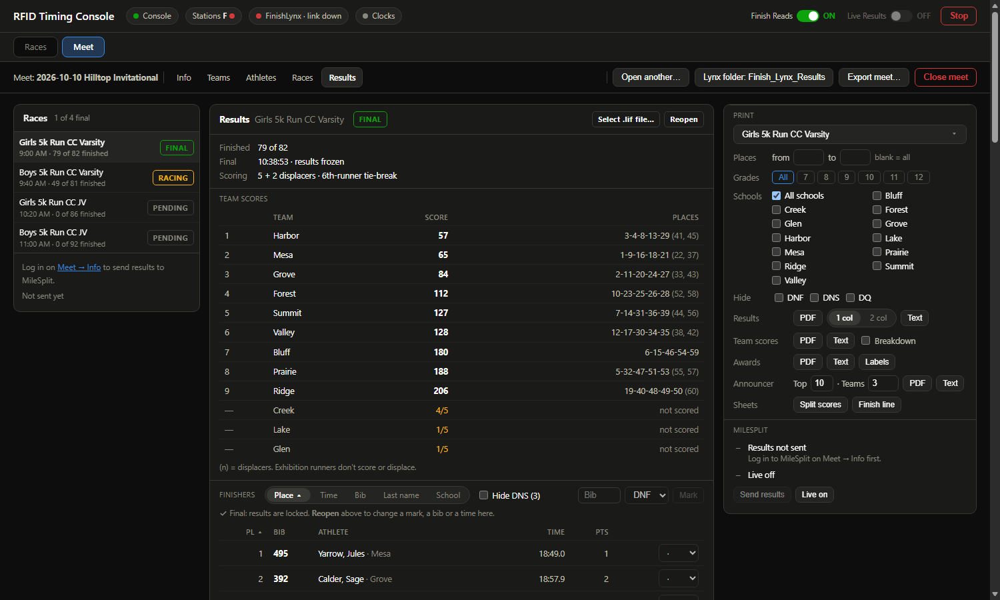

RFID Timing Console · Quick Start
Guide version 6 · matches the middleware at commit eed4e07 (2026-10-10). The package's
VERSION.txt names the commit you installed.
Set up a Windows timing PC so the RFID mat, the LED clocks and FinishLynx work together, then run a cross-country meet from the console's Meet tab: entries from MileSplit, bibs, FinishLynx start lists, results, printouts and the upload back to MileSplit. Plan on 20 minutes for the PC the first time, with FinishLynx and the reader at hand.
- What you need
- Install
- Network
- FinishLynx settings
- Set up the meet
- Check it: Setup check
- Meet day
- After the meet
- When something is wrong
- Addresses, ports and folders
1What you need
- A Windows 10 or 11 PC (64-bit) you can log in to as an administrator once.
- FinishLynx with the LapTime plug-in installed on that PC.
- The Vanch RFID reader (VF-747P or VF-787P) with its antennas, power supply and a network cable into the same switch as the PC and the FinishLynx camera.
- The timing company's MileSplit login, to pull the entries and send results (the PC needs internet for those moments only). No MileSplit? A Hy-Tek .txt or a .csv of the entries works too.
- Optional: the LED clocks on their USB-serial cables (CH340 = LED clock, PL2303 = Electro Numerics).
- Optional: Wireshark (free), so the console hears the start sensor through the camera.
- The package: rfid-finishlynx-<date>-<version>.zip.
2Install
- Unzip the package anywhere (Desktop or a USB stick is fine). Right-click the zip, Extract All… Do not run it from inside the zip.
- Open the extracted rfid_finishlynx folder and double-click INSTALL.bat.
- If Windows says "Windows protected your PC": click More info, then Run anyway. Accept the administrator prompt.
- The installer works through 10 steps. It needs no internet. Answer its questions:
It asks Answer Open Network Connections now to set it Only shown when the PC is not on the reader's network: Y, then see Network. Open the Wireshark download page now Y if you want starts from the camera. Install Wireshark with Npcap ticked. N is fine: you then set guns from the race pane. Change FinishLynx's settings now Close FinishLynx first, then Y. It sets everything in section 4 for you and keeps a backup. N if you prefer to set them by hand. Share meets with your other PCs through …\My Drive\RFID meets Only shown when Google Drive for desktop is installed. Y on every PC of your team (same Google account): a meet made or edited on one shows up on the others (section 5e). Without Drive, set it up later in the console: Meet › Info › Sharing. - At the end the console starts and the browser opens http://localhost:8080. An RFID Console shortcut is on the Desktop, and the console starts by itself every time you log in.
Updates come through the same section: Check for update, then Update now when there is a newer version (the PC needs internet for that moment). Your settings, meets and results are kept. Running a newer package's INSTALL.bat works too: it never copies over this PC's settings, meets or race state, and if the console is already running it leaves it alone (close its window when no race is running and start it again from the Desktop shortcut).
3Network
The reader, the FinishLynx camera and this PC must be on the same wired network, 192.168.0.x:
| Device | Address |
|---|---|
| RFID reader (factory setting) | 192.168.0.128 |
| This PC's wired adapter | 192.168.0.200 (any free 192.168.0.x), mask 255.255.255.0, no gateway |
| FinishLynx camera (typical) | 192.168.0.201 |
If your camera network already uses 192.168.0.x, nothing to do. Otherwise set the PC's address: Win+R,
type ncpa.cpl, right-click the wired adapter, Properties → Internet Protocol Version 4
(TCP/IPv4) → Use the following IP address.
The console finds the reader by itself, polls every antenna port it has, and turns the reader's beep off each time it connects: nothing to set on the reader.
4FinishLynx settings
Easiest: close FinishLynx and run C:\rfid_finishlynx\deploy\configure-finishlynx.bat (the installer offers the same). It shows what is wrong, changes only that, and saves a backup Lynx.cfg.before-rfid-<date> next to FinishLynx's settings. Open FinishLynx afterwards and check the screens below. To set them by hand:
All three are tabs of one Options dialog. Press Ok at the end to keep them.
4a. LapTime: RFID reads into FinishLynx
- FinishLynx menu LapTime → Options… (the LapTime plug-in must be installed).
- New (or pick the entry you use) and set Device: Lynx. Not IPICO, not BibLynx: those silently ignore the console.
- Serial Port: Network (listen), Port 5000. Sync. Source: Internal.

4b. Scoreboard: event, heat and race clock back to the console
- Menu Scoreboard → Options…, New, Name Middleware.
- Script: Example2.lss. Serial Port: Network (UDP), Port 5891, IP Address 127.0.0.1.
- Running Time: Normal (this is how the console learns the gun from FinishLynx). Results: Off.

4c. Folders
Menu File → Options…:
| Tab · setting | Folder | Why |
|---|---|---|
| Database · Input Directory | C:\Finish_Lynx_Results\RFID | The console writes the meet's start lists here (lynx.evt / .ppl / .sch) |
| Database · Output Directory | C:\Finish_Lynx_Results | FinishLynx saves its .lif files here (Write LIF File: On) |
| Event · Event Directory | C:\Finish_Lynx_Results | same folder |

5Set up the meet
Everything about the meet (teams, athletes, bibs, races and their order) lives on the console's Meet tab. The console rewrites FinishLynx's start lists every time something there changes, and makes a race pane on the Races tab for every race: there is nothing to export or load by hand. Do this before meet day, on the timing PC.
5a. Create the meet
Meet tab, then one of:
- Import from MileSplit (usual). Log in with the timing company's MileSplit email and password; leave Remember me on this computer ticked so the console can log in again by itself later. Pick the month, List meets, then Import on your meet. Full team rosters is ticked by default: every athlete on each team's roster comes in, not just the entered ones. Only entered athletes get bibs; the rest are there to be found quickly for race-day walk-ups (Refresh from MileSplit brings the rosters up to date).
- Import file: a Hy-Tek .txt, a .csv, or a MileSplit entries .json.
- New: an empty meet; add teams and athletes by hand.
The meet opens on its Info page: check the name, date, host and scoring (5 scorers, 2 displacers by default), Save info. Its To fix list says what is still missing, with a link to each. The red number on the Meet tab counts the same things.

5b. Teams and bibs
- Teams: untick Scores for a team that runs without being scored. Click a team to see its entered runners and its full roster.
- Athletes → Assign bibs…. Type the bib ranges you were given (leave the last End blank to keep counting upward), pick one sequence or per-team blocks, and drag the Order (for example Team, Gender, Last name). The preview shows who gets which number; Assign N bibs. Keep Retain existing bibs ticked when you run it again later: only athletes without a bib get one. The Athletes page lists runners with no bib first, every match on one page.

5c. Races, run order and start times
Races page of the Meet tab: drag the races into the order they run (FinishLynx gets the same order). Type a
Start time for each race if you have a schedule (8am, 9:30, 1:15: a bare
1:00 to 6:59 is the afternoon). Start times are optional; with them, check-in can open and close by itself
(section 7), the schedule prints with times, and MileSplit Live can show them.
- Two races off one gun (for example the JV girls and boys): a race's ⋮ → Run at the same time as…, tick the other race, Run together. FinishLynx gets one event and the console one pane (each runner tagged with their race and race place); each race is still placed, team-scored, printed and sent to MileSplit on its own.
- Divisions (extra standings inside a race, by gender, teams or grades, re-scored among their own runners): set them up on the Info page (Divisions row → Set up…), then pick them per race with ⋮ → Divisions…. None set = the meet scores as usual.

5d. Print and check
- Info page, Print before the meet: Schedule, All start lists, Rosters… (one page per school with each athlete's bib), Team labels, Competitor labels. Every printout opens in a new browser tab: print it from there, or save it under any name and folder.
- Info page, Start lists row: "Start lists written to FinishLynx <time>". Open FinishLynx: the meet's events are there.
- MileSplit meets: turn Live results on (Info page, or the Live Results switch at the top) if the meet shows live results on MileSplit.
5e. Share the meet with your other PCs (optional)
With Google Drive for desktop on each of your PCs (signed in to the same Google account): Meet › Info › Sharing, tick Google Drive, pick the same folder in My Drive on every PC (for example My Drive\RFID meets), give the PC a name, Save. A meet made or edited on one PC shows up on the others within minutes (Sync now to hurry it). Each PC keeps its own copy and writes only its own folder in Drive, and only the parts that changed, so even a large meet syncs in a few kilobytes. Edits to different athletes or races on different PCs all come through; if two PCs change the same thing differently, Sharing lists it and you pick Keep mine or Take theirs. Reads and race panes are never shared, only the meet.
Only your own PCs see your meets: they live in your Google account. To open a shared copy on a PC that isn't syncing, Meet → Open another… → Browse… and pick the manifest.json in that PC's folder in Drive.
6Check it: Setup check
Open the console (http://localhost:8080 or the Desktop shortcut) and click the Console chip at the top left. Its Setup check lists everything above: ✓ is fine, ✗ needs fixing and says how, – does not apply yet (for example, no clock plugged in). Check again after each fix.

Some rows only turn green once things are running: the LapTime link when FinishLynx is open, the scoreboard feed once an event is armed, the camera once FinishLynx talks to it. With a meet open, the Folders group checks that the meet's start lists are in the RFID folder. With no meet open it asks about MeetPro instead (section 5's MeetPro note).
7Meet day

- Power up the reader, clocks and FinishLynx. The console starts by itself at login, with the meet still open (if not: Meet tab → Open → your meet).
- Walk-ups and changes on the Meet tab's Athletes page: + Add athlete (it offers the next free bib and checks for someone already on the roster: Use this athlete); a row's ⋮ menu scratches, moves to another race or marks exhibition. Typing a bib someone else holds offers to swap them, or "Someone else is wearing N…" when a runner borrowed a bib. FinishLynx's start lists follow every change.
- Check-in: on the Races tab, Check-in… on the next race, pick the reader (the chute by default), optionally Close in a few minutes, Open check-in now. Several races can check in at once, one per reader. With start times, the dialog's Meet default (for example open 30 minutes before, close at the gun) does this for every race by itself.
- The gun arms the race by itself (camera start or FinishLynx's clock). Otherwise open the race's Start ▾ and pick the start or Gun = now (or Arm for Space: the next Space press is the gun). The race time runs at the left of the pane's gun row while the race is on (a closed race shows none). The LED clocks follow the running race; Send to clock puts an earlier race back on them for its stragglers.
- Finishers appear as they cross. Each station counts one read per runner: their first crossing. A later crossing, like a runner walking back over the finish mat, is ignored and kept out of FinishLynx. Needs attention lists anyone missing a mile split (Estimate, Add time or Publish without split) and anyone who crossed more often than expected (Checked, or Reads… to use another crossing).
- Course crosses the finish mat mid-race? The race's Settings → Crossings…: Reads before 1 for the finish station skips that first pass. Reads after 1 if runners walk back over the mat to the team area, so they aren't flagged.
- Fix a runner on the pane: click their finish time and type the right one (race time like
16:31.4or a clock time), Enter. A time set by hand shows an M: click it to go back to the read. Their ⋯: Swap bib with…, Change bib number…, Reads… (every read they have, with Use this read, Edit time and Delete) and Remove from race. Click a column heading to sort the pane (again to reverse). - Close race when the last runner is in. Anyone who ran in a race they were not entered in (or with a bib nobody has) has a pulsing Not in this race chip on their row and is left out of the results: click it for Swap bib with…, Override or Ignore, now or later. The clocks go back to the time of day.
- Results: Meet tab → Results, pick the race, clear anything under To resolve before final, Mark final (top right). Print from Print: its drop-down picks the races (the one shown, others, or All races) for results, team scores, awards, labels… Then Send MileSplit Results (every final race goes up together).

Fixing results
- A final race is locked: no DNF/DNS/DQ, no edits. Reopen (top right of the Results page) and fix it right there: click a bib or a time and type (Enter saves; a bib someone else has offers to swap them), the DNF/DNS/DQ drop-down, + Add runner, and each row's ⋯ for Swap bib with…, Reads… or Remove from the results. The race re-places and re-scores as you go; Mark final again and send.
- Sort the finishers by Place, Time, Bib, Last name or School (click again to reverse); Hide DNS leaves the no-shows off the list. The race list and the Print column stay on screen while you scroll.
- FinishLynx's video shows the right order but the reads don't (a runner walked back over the mat, a chip read at the wrong moment): Select .lif file… and pick FinishLynx's saved .lif for that race. Its times become the race's results; a final race is worked out again at once (then send it again). A time you typed by hand still wins over the file.

The chips
| Chip | Click it for |
|---|---|
| Console | Setup check, start/stop, Update now, Roll back, Send logs, restart. |
| Stations | Each reader and where it stands (Finish, Mile 1…, Check-in (chute)); ⚙ Reader… for antenna ports and power; the radio gateway for split stations. |
| FinishLynx | LapTime link and what it sends, scoreboard feed, camera start, film offset. |
| Clocks | Each LED clock; Time of day, count-up, 12/24-hour, Back to auto. |

8After the meet
- Every race final and sent (Meet → Results: Send MileSplit Results sends every final race). Print with All races ticked prints them together.
- Close FinishLynx.
- Meet tab → Close meet. The dialog shows the folder it will make, C:\Finish_Lynx_Results\<date> <meet name>\; Close meet & clear. Everything goes into it: the meet, every read, FinishLynx's files and the RFID files, each copy checked before the original is removed. The console, the results folder and the RFID folder are then empty for the next meet.
If the close stops (a full disk, a locked file), the message says why; fix it and click Close meet again to finish. Nothing is deleted without a checked copy.
Opening a closed meet again: Meet → Open → the meet marked CLOSED (or Browse… to <meet folder> - MEET FILE.json if the folder moved). It asks how:
- Open without FinishLynx to print results, send them again, or fix names, bibs or teams. Nothing is copied into the results folder and results cannot be changed. Save & close writes the meet file back into its meet folder.
- Open with FinishLynx to fix a result. First close FinishLynx and the meet that is open now: the results and RFID folders must be empty (the dialog lists anything still there, so nothing is overwritten). Its files, panes and reads come back as they were. Fix it, Mark final, send it, and Close meet again.
9When something is wrong
| You see | Do |
|---|---|
| Stations chip red / "Reader offline" | Reader power and network cable; PC on 192.168.0.x (section 3). The console reconnects by itself. |
| Reads in the console, nothing in FinishLynx | Finish Reads switch ON; FinishLynx LapTime Device Lynx on port 5000; an event armed and started. |
| FinishLynx has no events / old athletes | Meet → Info, Start lists row. "No FinishLynx (RFID) folder set": the Meet tab's Lynx folder button → C:\Finish_Lynx_Results. Then check FinishLynx's Input Directory (section 4c). |
| LED clock dark | Setup check → clock drivers. If FinishLynx's own scoreboard list has an entry on that clock's COM port, FinishLynx holds the port: remove that entry or pick a different clock. |
| Clock shows the wrong thing | Clocks chip → Back to auto. |
| Gun not picked up | Race Start ▾ → pick the start or Gun = now. For camera starts: Wireshark installed, FinishLynx open. |
| Live Results switch greyed out | Log in to MileSplit (Meet → Info) and use a meet imported from MileSplit. |
| MileSplit refuses the results | Too few athletes carry a MileSplit id: Meet → Athletes, MileSplit id review, approve the matches. |
| A coach says bibs were swapped (or the wrong kid wore one) after the race | Results page: Reopen, click the runner's bib and type the right one: a bib someone else has offers Swap bibs. (Or on Meet → Athletes: Someone else is wearing N….) The race re-scores at once; Mark final, then Send the corrected results if they were on MileSplit already. MileSplit Live follows by itself. |
| A finish time is wrong | Click it (race pane, or the Results page once reopened) and type the right one. The M next to it puts the read time back. |
| A runner is placed by a later crossing, or the course crosses the finish mat early | Their ⋯ → Reads… → Use this read on the right crossing. For the whole race: Settings → Crossings… (Reads before / Reads after). Or Select .lif file… with FinishLynx's file. |
| Close meet refused | Close FinishLynx first. |
| Console page does not load | Open it on the timing PC itself. Double-click the Desktop RFID Console shortcut, then reload the page (F5). |
| After an update, buttons look old | Reload the page (F5). |
| The new version misbehaves | Console chip → Roll back. If it will not even start, it goes back to the previous version by itself after three tries. |
| Anything else odd | Console chip → type what happened (with the time) → Send logs. Do it the same day: the logs keep two weeks. |
10Addresses, ports and folders
| What | Value |
|---|---|
| Console web page | http://localhost:8080 (this PC only) |
| FinishLynx LapTime (console → FinishLynx) | TCP 5000, Device Lynx |
| FinishLynx scoreboard (FinishLynx → console) | UDP 127.0.0.1:5891, Example2.lss |
| Reader | 192.168.0.128 (Modbus TCP 502, UDP 1969) |
| Install folder | C:\rfid_finishlynx (settings: config.yaml, log: rfid_timing.log, meets: meet\) |
| FinishLynx results | C:\Finish_Lynx_Results |
| Start lists and RFID .lif files | C:\Finish_Lynx_Results\RFID |
| Closed meets | C:\Finish_Lynx_Results\<date> <meet name>\, opened again from <meet folder> - MEET FILE.json |
| Shared meets (optional) | Your Google Drive folder (for example My Drive\RFID meets): one subfolder per meet, one per PC inside it |
| MileSplit saved login | %LOCALAPPDATA%\rfid_finishlynx (Meet → Info → Forget saved login removes it) |